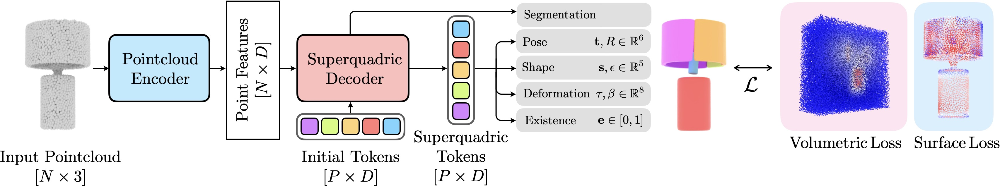
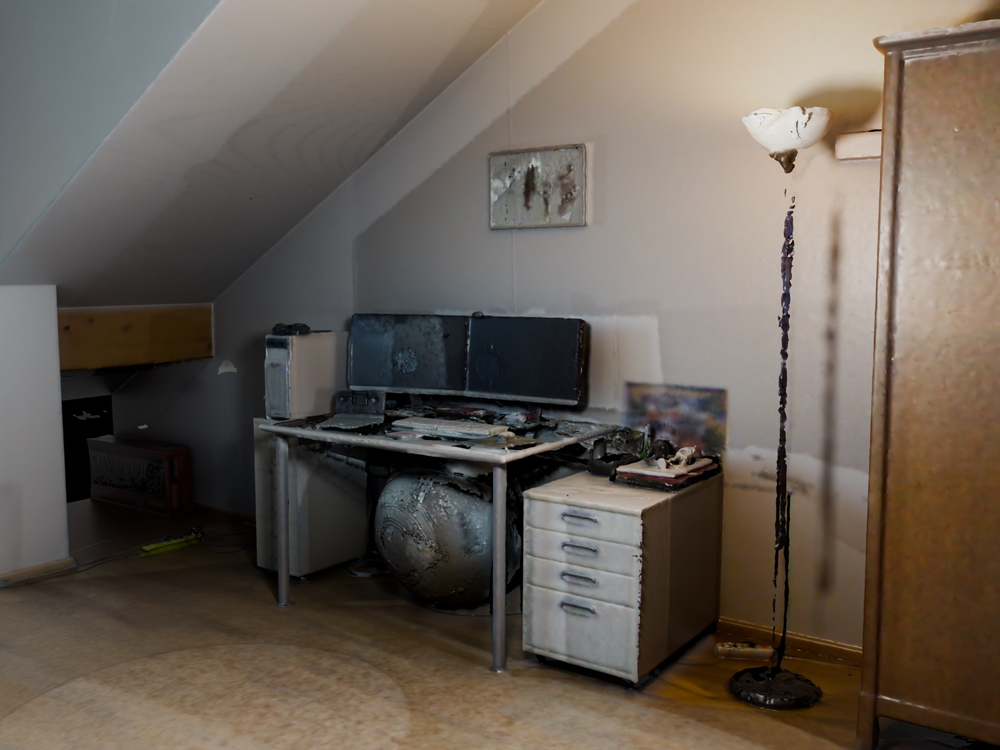
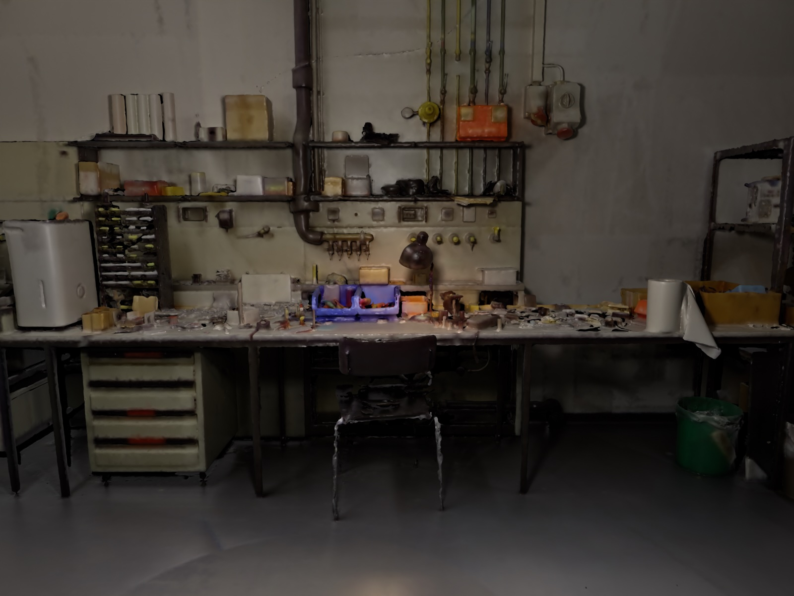
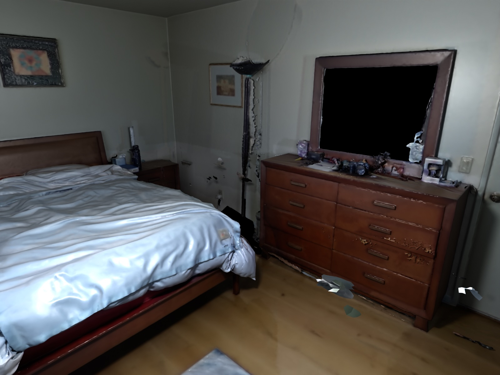
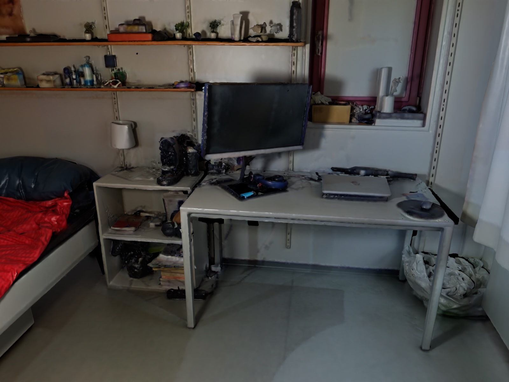
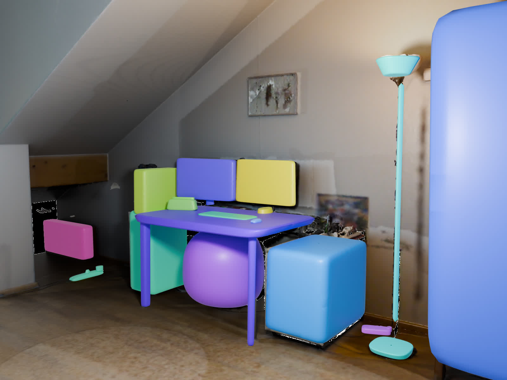
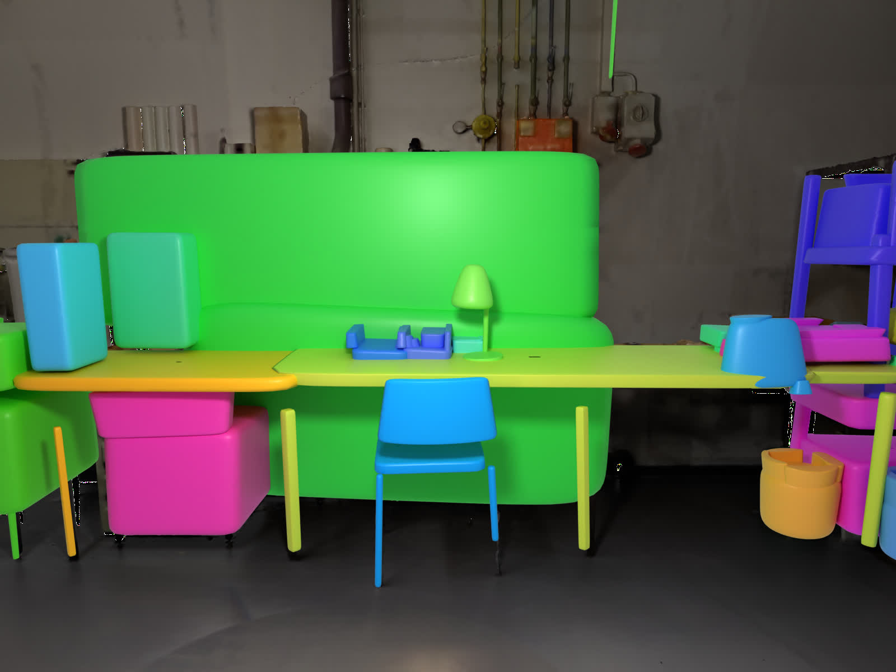
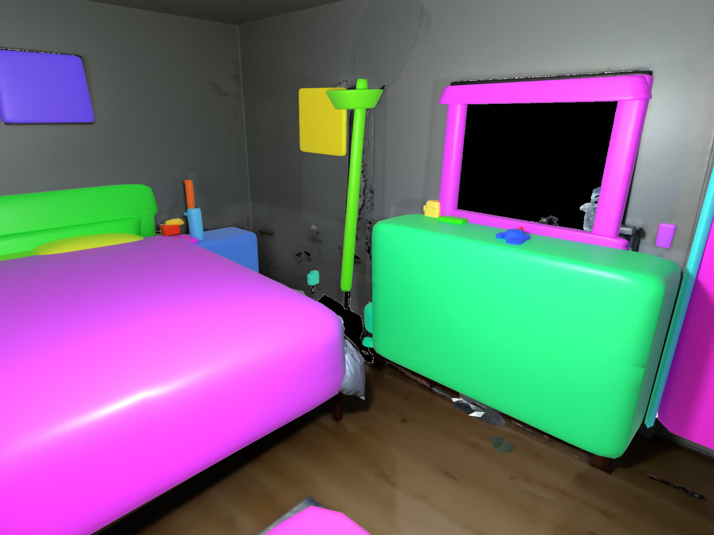
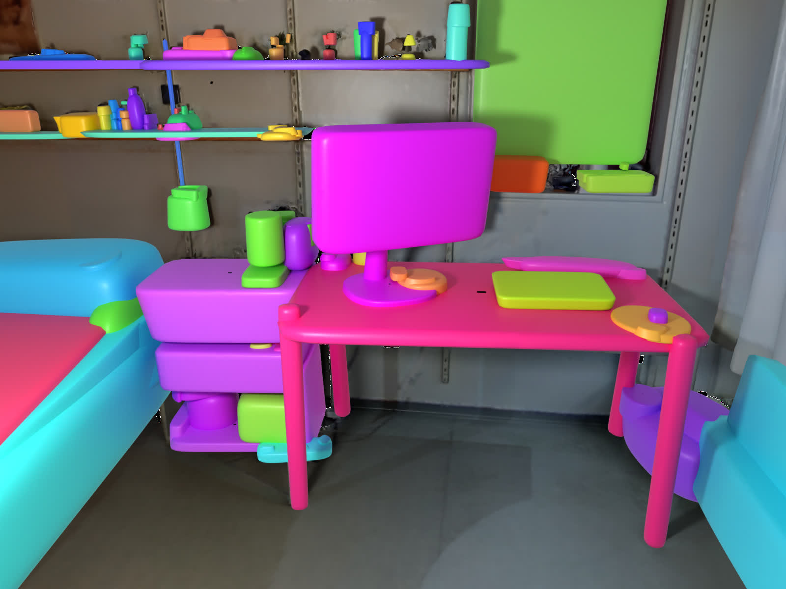
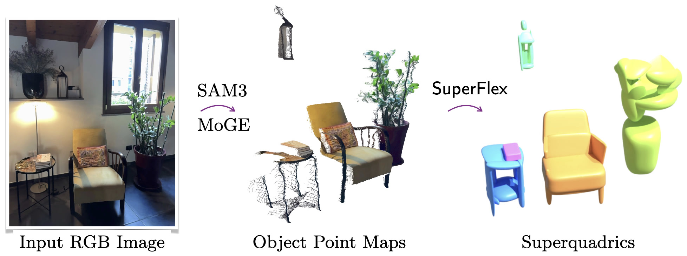

Overview of SuperFlex. Given an input point cloud, SuperFlex decomposes the object into a set of superquadric primitives, each defined by pose, shape, and deformation parameters. The model is trained via self-supervised joint volumetric and surface losses. A subsequent (optional) object-specific optimization can further improve the superquadric decomposition quality leveraging the same losses.
We evaluate the performance of SuperFlex to decompose individual objects on ShapeNet, a traditional object dataset.
Our SuperFlex model significantly outperforms all the learning- and optimization-based methods, particularly in terms of IoU. The only method which is able to achieve similar IoU compared to our base model is Marching Primitives [4] which however uses more than 4x the primitives and is 10000x slower.
We compare with five baselines: SQ [1], CSA [2], EMS [3], Marching Primitives [4], SuperDec [5].
We also show that with the introduction of our refinement stage, which is much faster than prior optimization methods, predictions from our feed-forward model can be enhanced further by obtaining a 22% improvement over the predictions.
We evaluate reconstruction under realistic sensing conditions both quantitatively and qualitatively. We use the Aria Synthetic Environments (ASE) dataset for quantitative evaluation as having access to the GT 3D models allows to compute all the relevant metrics. ASE dataset contains scans of complex indoor scenes made up of objects from the Amazon Berkeley Objects (ABO) dataset. We use the provided depth maps together with the instance segmentation masks to extract object point clouds that exhibit viewpoint-dependent incompleteness, including self-occlusion, partial visibility, and occlusion by surrounding objects. We give those point clouds as input to our model and we use the ground truth 3D models from ABO to evaluate our predictions.








Inspired by how SAM3D proposed to reconstruct multi-object scenes from a single RGB frame, we experiment how SuperFlex can be used in the same monocular setting. We propose a modular pipeline that integrates SAM3 for object segmentation and MoGE for lifting 2D masks into partial 3D point clouds. While single-view observations suffer from inherent self-occlusion, our robust model, fine-tuned with occlusion augmentations, can still infer complete object geometries as sets of coherent deformable primitives.

@article{superflex,
title = {{SuperFlex: Deformable Superquadrics for Point Cloud Decomposition}},
author = {Tavernini, Gabriel and Fedele, Elisabetta and Novello, Tiago
and Guibas, Leonidas and Pollefeys, Marc and Engelmann, Francis},
booktitle = {arxiv},
year = {2026}
}